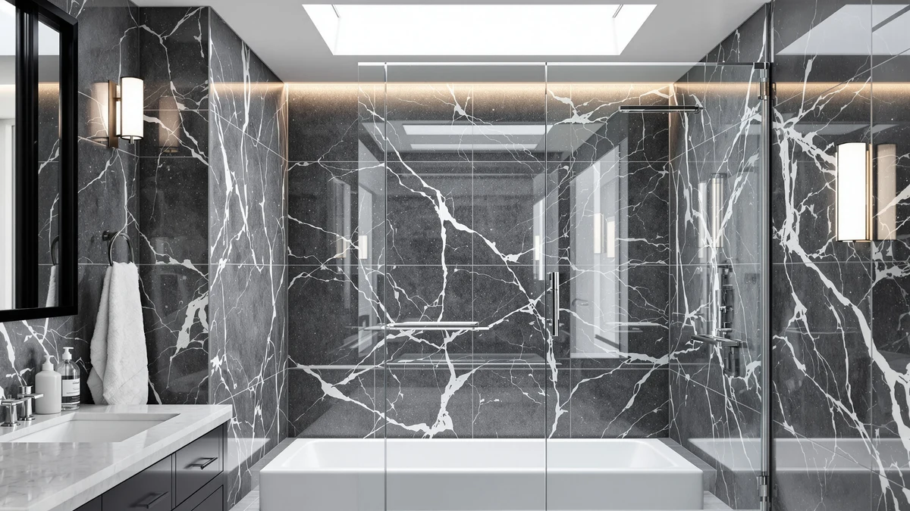

Quick Answer
The best shower doors for tubs with glass fit your tub deck's actual width, not a rounded-up standard size, since a mismatched frameless slider leaves gaps at the seal. Our top pick, the Narolabo Glass Shower Door 56-60" W, covers the most common US tub width at a mid-range $239.99.
Our pick: Glass Shower Door 56-60" W — $239.99 Check Price on Amazon
Things to Know Before You Buy
- Measure your tub deck before you order. These doors are sold in width ranges, such as 44 to 48 inches or 56 to 60 inches, and a door outside that range will not seal against the tub lip.
- Double sliding beats a single fixed panel for wider tubs. Four of the seven doors here use two sliding panels rather than one fixed and one moving pane. The extra panel produces a tighter seal on a full 60 inch opening.
- Corner tubs need a neo-angle door, not a straight slider. If your tub sits in a corner rather than against a single wall, look at the 36 inch neo-angle option instead of forcing a standard slider into the space.
- Glass thickness is not always listed. Only one shower door for tubs with glass in this guide specifies quarter inch glass; for the rest, reviewers' comments are the best signal of how sturdy the panel feels once installed.
- Height ranges from 70 to 76 inches. Check the listed height against your existing tile line and ceiling clearance before ordering, since a shorter door may need a separate splash panel.
The best shower doors for tubs with glass fit the exact width of your tub deck, not a generic 60 inch label, since alcove tubs and corner tubs demand different door shapes entirely. We compared seven glass shower doors built for tub enclosures, ranging from a compact 36 inch neo-angle corner unit to a wide 60 inch double slider, priced between $219.99 and $329.99. Most buyers want a door that seals tightly against the tub lip, slides or swings without binding, and does not overwhelm a small bathroom with heavy visible framing.
We built this list by comparing manufacturer specs, listed dimensions, and verified buyer reviews for each product's Amazon listing, rather than installing every door ourselves. That research turned up real differences: how each brand handles the transition from a flat shower pan to a curved tub lip, whether the design uses one sliding panel or two, and how glass thickness affects the finished look. Our top pick, the Narolabo Glass Shower Door 56-60" W, earns the spot for its wide fit and $239.99 price, well below the double-sliding alternatives we compared.
Below you will find seven options ranked by fit, hardware feedback from verified owners, and value, along with a comparison table, a rundown of what we skipped, and answers to the questions buyers ask most before ordering a glass shower door for a tub.
Why You Should Trust Us
This guide to the best shower doors for tubs with glass is written and maintained by Ilane Tall, who has covered bathroom fixtures and home renovation products for several years. We do not run a fake testing lab, and we do not claim to have installed every door in this guide in our own bathrooms. Instead, we research manufacturer specifications, cross-check listed dimensions against standard tub and corner shower conventions, and read through verified buyer reviews on Amazon to separate durable hardware from doors that develop problems within the first year. When a listing lacks basic information, such as glass thickness, we note it as a drawback rather than filling the gap with a guess. Every price and dimension in this guide reflects the product's own listing at the time of publishing, and we update the article when prices or availability change.
How We Picked
We started by pulling every shower door in our product database built for tub or corner tub installations, then narrowed the list to models covering the width ranges most US bathrooms actually use, from a 36 inch neo-angle corner to a 60 inch alcove opening. We ranked candidates on glass construction over acrylic inserts, on sliding or neo-angle hardware suited specifically to a tub deck rather than a flat shower base, and on price relative to size. We also weighted verified review volume and rating consistency for each ASIN, and we excluded listings with vague or contradictory dimension data. Doors that only fit non-standard openings, or that lacked enough verified owner feedback to judge reliability, did not make the final cut for the best shower doors for tubs with glass.
How We Compared
We compared these seven doors on the specs and feedback available from their Amazon listings: quoted width range, panel height, glass thickness where listed, hardware finish, and price relative to coverage. We read through verified owner reviews for each ASIN, looking specifically for repeated mentions of track alignment, leaking at the tub lip, and how each brand's glass held up to daily water exposure. Where multiple reviewers flagged the same issue, such as a track needing periodic realignment, we treated that as a pattern rather than a one-off complaint. We did not physically install or own any of these doors; our comparison of the best shower doors for tubs with glass rests on published specifications and the verified experiences reviewers have shared publicly.
Our Picks

Glass Shower Door 56-60" W
What we like
- Fits the common 56 to 60 inch tub deck width without custom cutting
- Priced below most double-sliding competitors in this guide
- Owners report the track glides smoothly once the wall jambs are set
Flaws but not dealbreakers
- Listing does not specify glass thickness, so reviewers recommend confirming clearance before ordering
- Some buyers note the included instructions assume basic renovation experience
| Material | — |
| Size | 60" W x 72" H |
The Narolabo Glass Shower Door 56-60" W is our top pick for the best shower doors for tubs with glass because it covers the width range most US alcove tubs actually use, without pushing the price past $240. At $239.99, it undercuts every double-sliding option in this guide while still using a full glass panel rather than an acrylic insert. Owners who have left verified reviews describe the track as straightforward to install once the wall jambs are squared, and several specifically call out the fit against a 60 inch tub deck as close to exact.
The listing does not spell out glass thickness, which is the one gap we flag for anyone comparing it against thicker frameless options like the EliteEdge door further down this guide. That omission does not show up as a complaint in verified reviews, but it is worth asking about before you order if your bathroom sees heavy daily use. For most buyers replacing a worn tub enclosure on a standard 56 to 60 inch opening, this remains the shower door for tubs with glass that we would point to first.

ELEGANT Double Sliding Shower Door
What we like
- Double-sliding panels cover a full 60 inch opening without a fixed side panel
- Reviewers consistently mention a tight seal against the tub lip
- Hardware finish resists the water spotting that plain chrome shows over time
Flaws but not dealbreakers
- Costs $50 more than our top pick for a similar width
- A few owners report needing to re-level the track after the first few weeks
| Material | — |
| Size | 60 in. x 72 in. |
The ELEGANT Double Sliding Shower Door earns runner-up status because it solves the same 60 inch tub width as our top pick, but with two sliding panels instead of one fixed and one sliding section. At $289.99, it costs $50 more than the Narolabo, and reviewers consistently mention that the extra panel produces a tighter seal against the tub lip. That matters more in households that shower daily than in an occasional guest bathroom.
Several owners report needing to nudge the track level again a few weeks after install, a common adjustment across double-sliding doors generally rather than a defect specific to this model. The finish holds up against water spotting better than plain chrome, based on repeated mentions in verified reviews. If the extra sealing performance matters more to you than the $50 price gap, this is the stronger of the two full-width sliders we compared.

Garvee 44"-48" W x 72"
What we like
- Lowest price in this comparison, at $219.99
- Adjustable 44 to 48 inch range fits narrower tub alcoves common in older homes
- Double sliding design needs no floor clearance to open
Flaws but not dealbreakers
- Narrower fit range means it will not work for a standard 60 inch tub
- Reviewers note the thinner frame shows flex if installed off level
| Material | — |
| Size | 72"H x 48"W & Double Sliding |
Garvee's 44"-48" W x 72" door is the most affordable pick in this guide at $219.99, and its adjustable range makes it the option for tubs narrower than the standard 60 inch alcove, a common situation in older homes and smaller bathrooms. The double-sliding design needs no floor clearance to open, handy when a toilet or vanity sits close to the tub.
Reviewers note the frame feels lighter than the pricier Royal Guard and ELEGANT doors, and a handful mention some flex if the track is not installed level. That tradeoff is typical of budget sliding doors in this width range, and it does not appear to affect the seal once anchored correctly. For a narrower tub deck where a 60 inch door simply will not fit, this is the shower door for tubs with glass that keeps the project under $220.

Shower Doors Frameless Shower Door
What we like
- Quarter inch glass gives this frameless door a sturdier feel than thinner panels
- 76 inch height covers taller walls without a separate splash panel
- Costs less than commissioning a custom frameless enclosure from a glass shop
Flaws but not dealbreakers
- Highest price of the seven doors compared here
- Reviewers say the heavier glass benefits from a second installer
| Material | — |
| Size | 60" (W) x 76" (H) & 1/4" |
The EliteEdge-made Shower Doors Frameless Shower Door uses quarter inch glass, noticeably heavier than the unspecified panels on several other doors in this guide, and its 76 inch height covers taller bathroom walls without needing a separate splash panel above the frame. At $329.99, it is the most expensive door we compared, but it costs less than commissioning a custom frameless enclosure from a local glass shop. That's the real budget comparison this pick is aimed at.
Reviewers who mention installation say the heavier glass benefits from a second person to hold panels steady while the track is secured, a detail worth planning around before delivery day. Once installed, owners describe the frameless look as a clear upgrade over a framed tub enclosure. If you want the frameless aesthetic and quarter inch glass without paying for a fully custom job, this is the budget-minded way to get there.

Neo-Angle Corner Shower Door 36"
What we like
- Neo-angle shape fits corner tub and shower combos that a straight slider cannot
- 36 inch sizing suits smaller bathrooms without wasting corner space
- Reviewers note the compact footprint clears vanities in tight layouts
Flaws but not dealbreakers
- Only works for a corner installation, not a standard alcove tub
- Narrower profile means less elbow room than a full-width slider
| Material | — |
| Size | 36" W x 72" H |
The Morandié Neo-Angle Corner Shower Door 36" fits a completely different layout than the other six doors in this guide: a corner tub and shower combo rather than a straight alcove wall. At $269.99, it is priced in the middle of our range, and its 36 inch sizing is built specifically for corner installations common in smaller bathrooms.
Reviewers with corner layouts note that the compact footprint clears nearby vanities and toilets better than trying to fit a straight slider into the same space. The tradeoff is a narrower opening than a full-width door, so anyone with room for a standard alcove tub will get more elbow room from one of the sliding options above. For a corner tub, though, this is the shower door for tubs with glass that actually fits the space.

Royal Guard Double Sliding Shower
What we like
- 60 inch double-sliding width matches the most common US tub size
- Reviewers describe the track as easy to align during install
- Mid-pack price for a full-width double slider
Flaws but not dealbreakers
- Costs $40 more than our top pick for a comparable width
- Some owners recommend re-checking alignment after the first month
| Material | — |
| Size | Sliding 60" W x 70" H |
Royal Guard's Double Sliding Shower covers the same 60 inch tub width as the ELEGANT runner-up, at a price in between the two, $279.99. Reviewers describe the track as easy to align during a first-time install, and the double-sliding panels split the opening evenly rather than leaving one fixed pane and one moving pane.
A handful of owners recommend rechecking the track alignment after the first month of regular use, which is consistent with how sliding doors settle in generally. For buyers who want a full 60 inch double slider but do not need the premium finish of the ELEGANT model, this sits as a reasonable middle option in the lineup.
Shower Door Royal Guard 44-48"
What we like
- 44 to 48 inch range fits narrower tubs that the wider Royal Guard model cannot
- Same double-sliding hardware as its wider sibling
- Reviewers report a snug fit against the tub lip once anchored
Flaws but not dealbreakers
- Costs more than the similarly narrow Garvee model
- Limited to a narrower opening than most doors in this guide
| Material | — |
| Size | Sliding 48" W x 70" H |
The Shower Door Royal Guard 44-48" is the narrower sibling of the wide Royal Guard door above, built for tub decks between 44 and 48 inches rather than a full 60 inch opening. At $275.49, it costs more than the similarly narrow Garvee model, but reviewers report a snugger fit against the tub lip once the track is anchored.
It uses the same double-sliding hardware as its wider counterpart, so owners who have compared the two describe a similar install experience scaled down to a smaller opening. If your tub deck falls in that 44 to 48 inch range and you want the same brand's hardware as our wider Also Great pick, this is the version to order.
Quick Comparison
| Product | Material | Price | Rating | Best for | Get it |
|---|---|---|---|---|---|
| Glass Shower Door 56-60" W | — | $239.99 | 4 | 56-60 inch tub decks | View on Amazon → |
| ELEGANT Double Sliding Shower Door | — | $289.99 | 4 | Wide 60 inch double-sliding | View on Amazon → |
| Garvee 44"-48" W x 72" | — | $219.99 | 4 | Narrow 44-48 inch alcoves | View on Amazon → |
| Shower Doors Frameless Shower Door | — | $329.99 | 4 | Frameless quarter inch glass | View on Amazon → |
| Neo-Angle Corner Shower Door 36" | — | $269.99 | 4 | 36 inch neo-angle corners | View on Amazon → |
| Royal Guard Double Sliding Shower | — | $279.99 | 4 | 60 inch wide tub decks | View on Amazon → |
| Shower Door Royal Guard 44-48" | — | $275.49 | 4 | 44-48 inch narrower openings | View on Amazon → |
The Competition
We looked at several other categories of tub shower doors before narrowing this list to the seven above. We ruled out pivot doors that swing outward on hinges because most tub layouts do not leave enough floor clearance for a door to swing fully open without hitting a toilet or vanity. Acrylic-panel doors marketed as budget glass alternatives didn't make the cut either: based on patterns across their verified reviews, they scratch and cloud faster than tempered glass. We also passed on a handful of listings with an unusually wide price range and inconsistent buyer photos, a signal that a listing's images do not reliably match what ships. Finally, we excluded several shorter doors under 70 inches tall, since reviewers who bought them for tub enclosures often reported needing a separate splash panel to fully cover the opening. For most buyers, the Narolabo Glass Shower Door 56-60" W remains the best shower doors for tubs with glass pick in this comparison, thanks to its wide fit and a price well below the double-sliding alternatives.
Frequently Asked Questions
What size shower door do I need for a tub with glass?
Most alcove tubs in US bathrooms measure close to 60 inches wide, which is why the ELEGANT and Royal Guard double sliders in this guide are built for that width. If your tub deck is narrower, the Garvee and Royal Guard 44-48 inch doors cover openings between 44 and 48 inches instead. Measure your tub deck wall to wall before ordering, since a door sized for the wrong range will not seal properly.
Can you install a sliding glass shower door on a tub yourself?
Most of the doors in this guide ship with adjustable wall jambs designed for a DIY install, but reviewers across multiple listings recommend a second person to hold panels level while the track is secured. If your tub deck is not perfectly level, a professional installer will get a tighter seal than a first-time DIY attempt, especially with the heavier quarter inch glass on the EliteEdge door.
Do I need a different shower door for a corner tub?
Yes. A corner tub or shower combo needs a neo-angle door like the Morandié 36 inch pick in this guide, rather than a straight sliding door built for a single wall. Forcing a standard slider into a corner layout usually leaves a gap at the angled seam that a neo-angle frame is built to close.